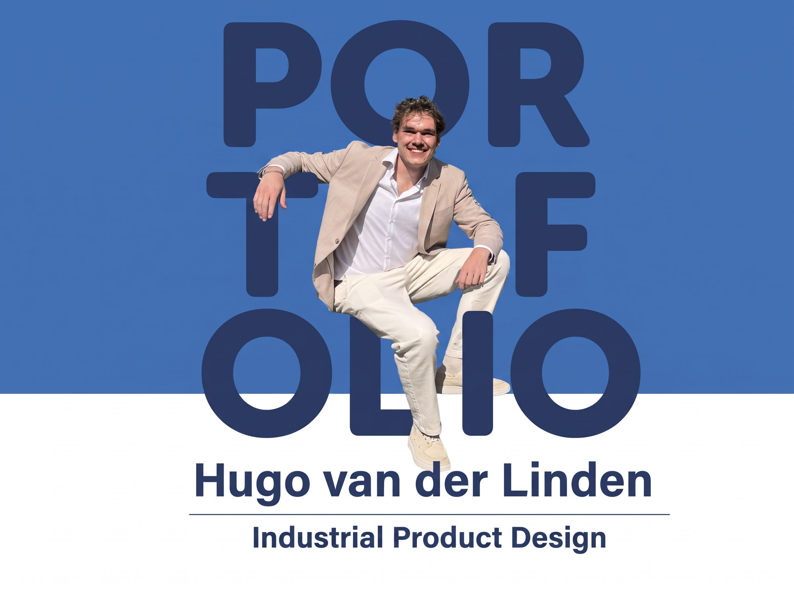
Selected work
Highlighted
projects.
Six projects that show the range of how I think, make and design.

Graduation project
Grabable
Making grasping more reachable.
View project ↗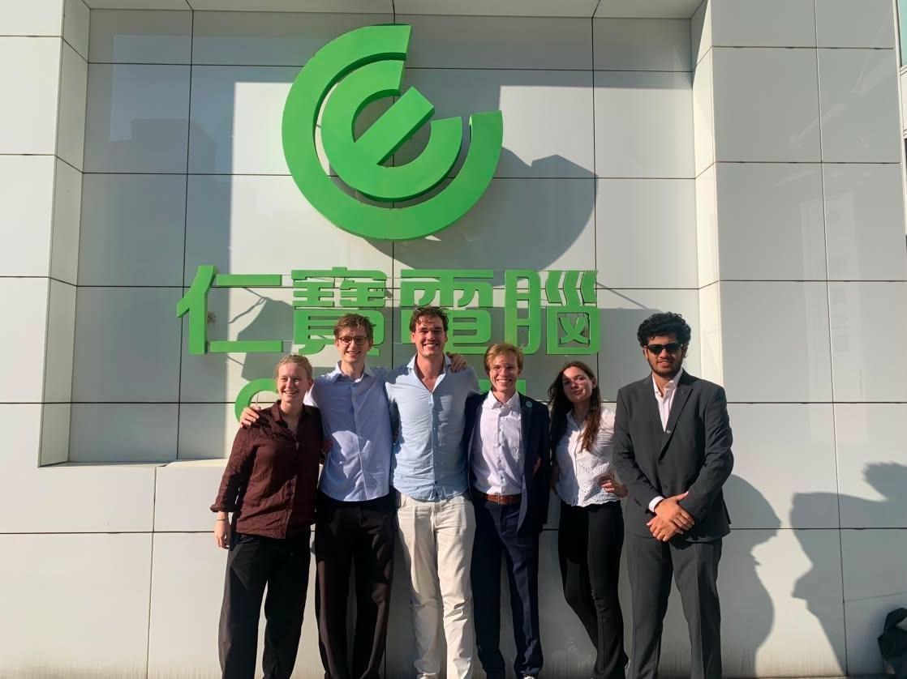
International collaboration
Taiwan project
Designing together across cultures and disciplines.
View project ↗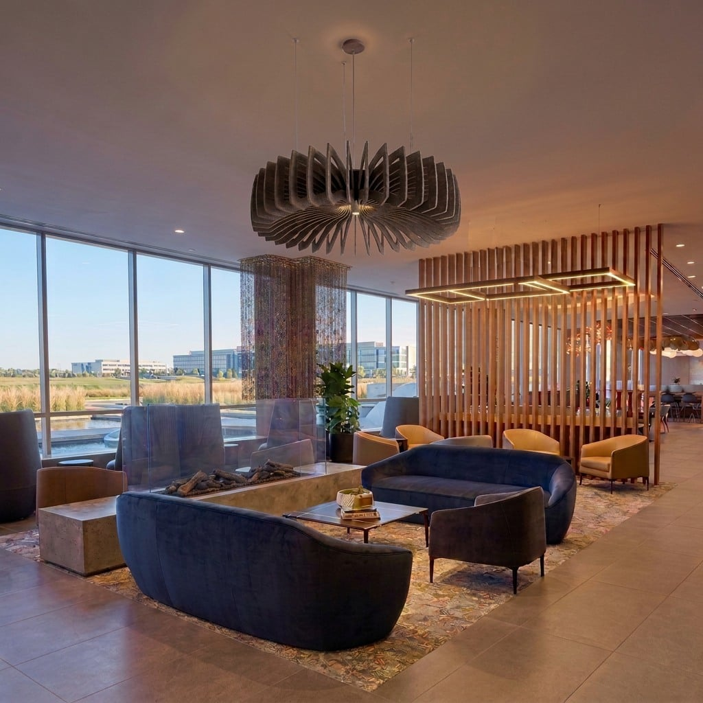
Product development
EASYfelt
Turning PET felt into products for real interiors.
View project ↗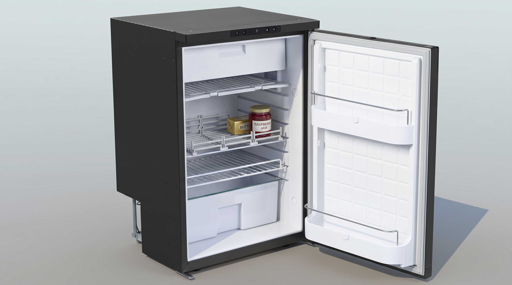
Product design
Thetford fridge interior
Making everyday storage work better.
View project ↗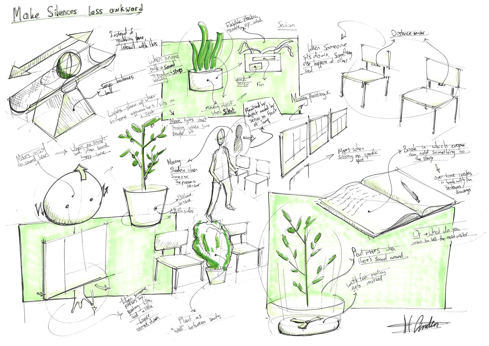
Interaction design
Frame the Waiting
Reframing an awkward pause as connection.
View project ↗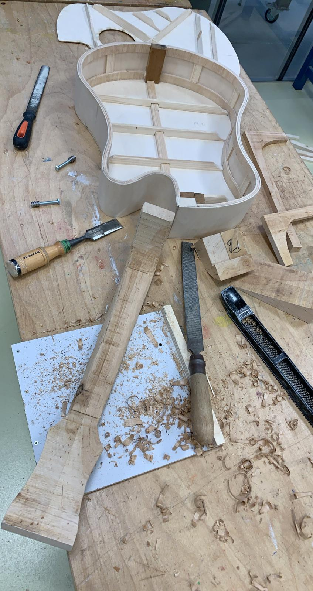
Personal project
Building a guitar
A maker’s curiosity, tuned by hand.
View project ↗About
Built from
curiosity.
to improve people's lives.
I am a 24-year-old designer studying Integrated Product Design at TU Delft. I am building a career from a lifelong fascination with human-centred product development.
From an early age, I have built electrical circuits, my own robot and working machines. That hands-on curiosity now informs my interest in functional products with an engineering foundation, particularly in healthcare and the everyday objects people rely on.
I focus on technical products that are useful and easy to use, creating thoughtful impact through the details of how they work and feel.
Design & engineering
A practice in
motion.
A chronological journey through design and engineering education and relevant work. Hover a highlighted milestone to unfold its public cases.
Experience
My job
experience.
Occupation & internships
- EASYfeltR&D
- ’t Wapen van MaeslantBartender
- 3D Next LevelCreative engineer
- HPM bvMetalworking and assembly
- SIMgroep B.V.Dataspecialist
- BroosverspreidingenDeliverer of newspapers and brochures
Volunteer work
- Hometown FestivalBuilding up and decoration
- World Servants · Nalerigu, GhanaBuilt a primary school
- Sport en Spel MaaslandConstruction, dismantling and other odd jobs
- WesterpopHelping with tasks
Software vaardigheden
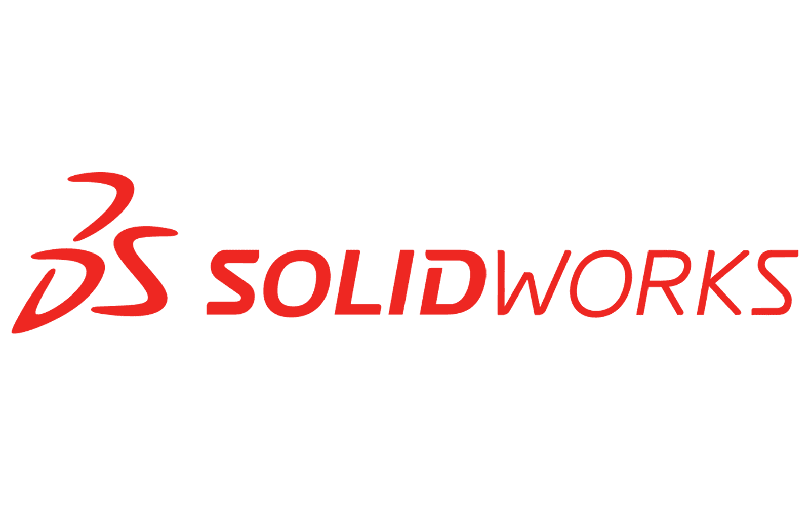
SolidWorks5 / 5 · Zeer ervaren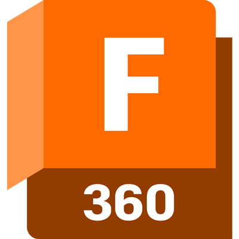
Fusion 3605 / 5 · Zeer ervaren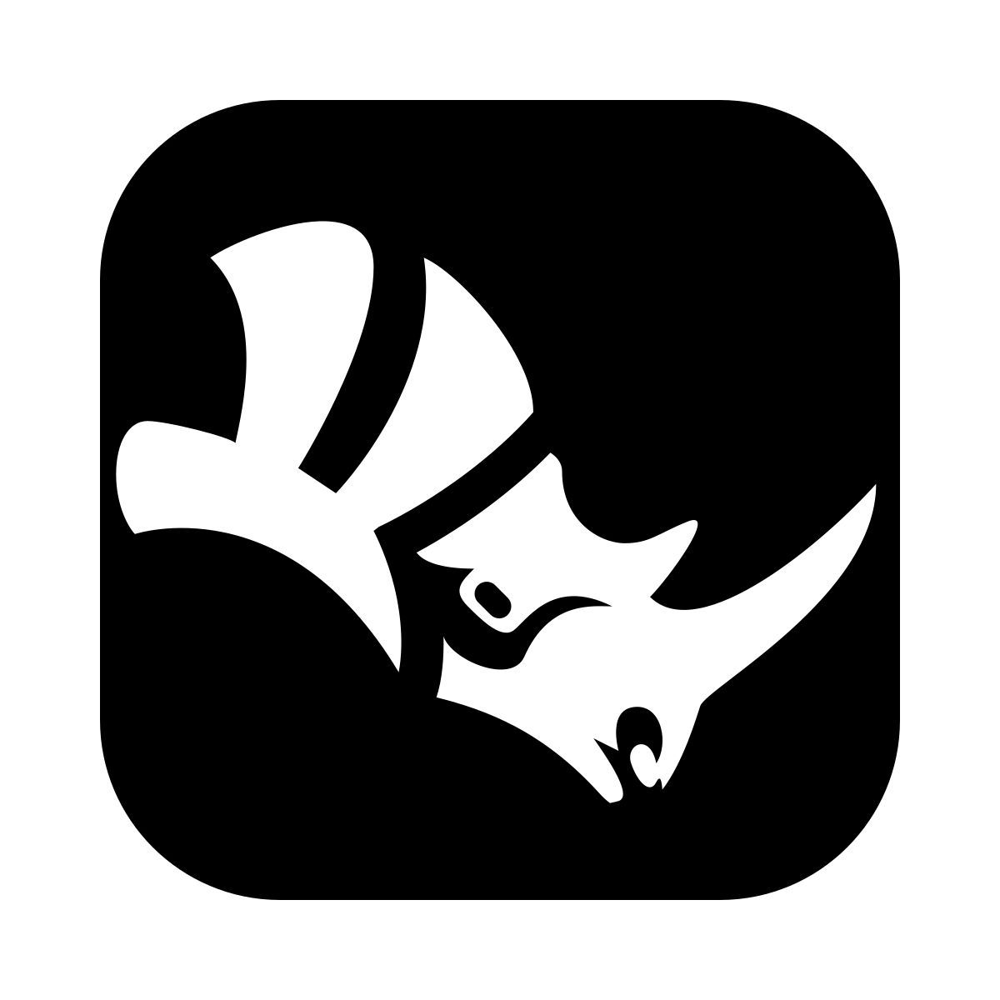
Rhino2 / 5 · Basiskennis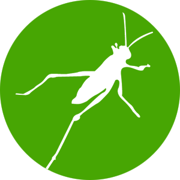
Grasshopper3 / 5 · Gemiddelde kennis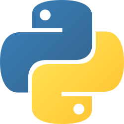
Python3 / 5 · Basis tot gemiddeld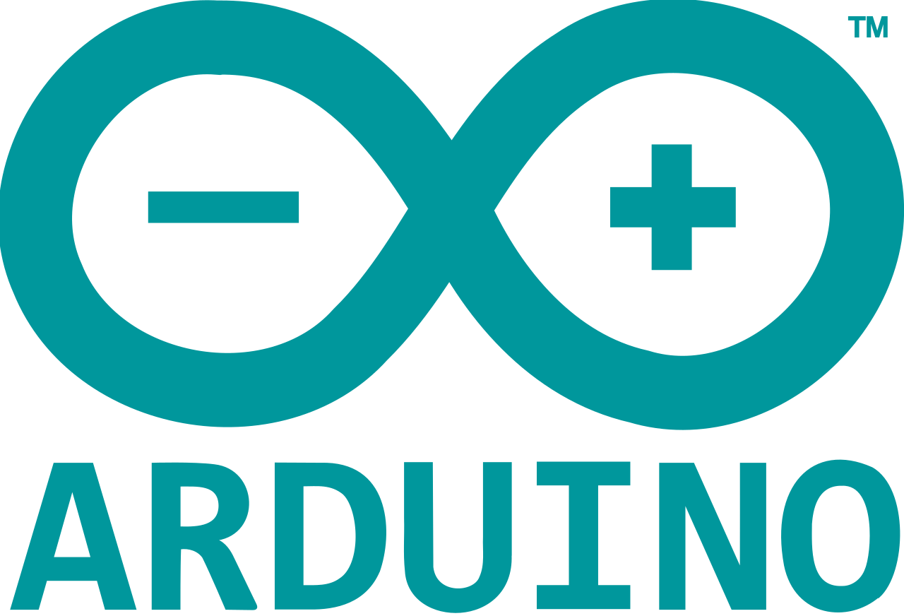
Arduino4 / 5 · Bovengemiddeld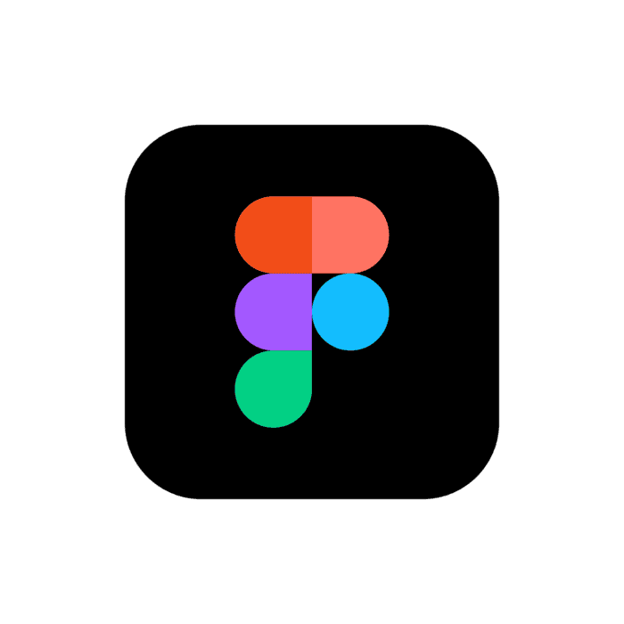
Figma3 / 5 · Gemiddelde kennis- Working with ChatGPT4 / 5 · Bovengemiddeld
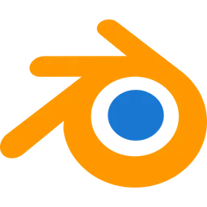
Blender2 / 5 · Basiskennis- Adobe PhotoshopErvaren
- Adobe IllustratorErvaren
- Adobe InDesignErvaren
Andere vaardigheden
- Design schetsenGevorderd
- ReframingOntwerpmethode
- LassenBasis